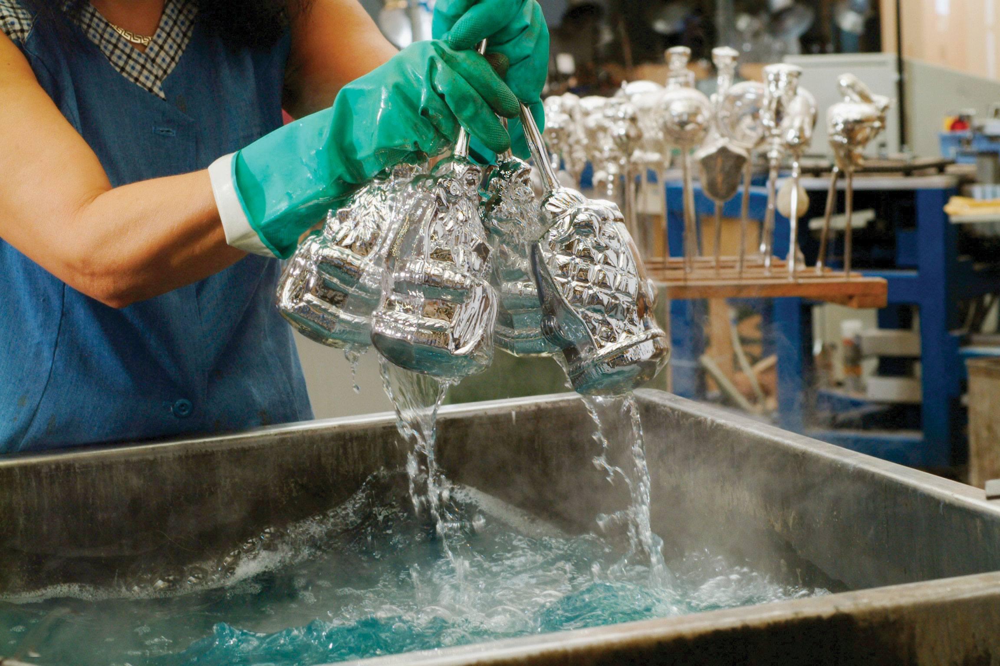
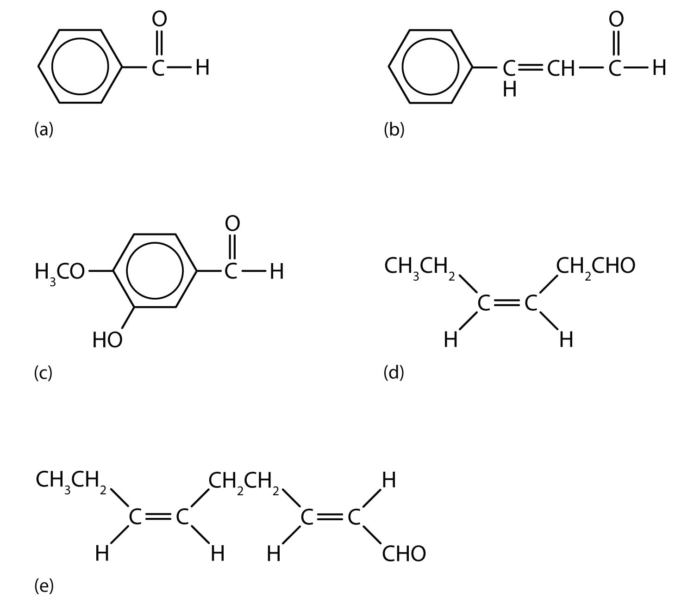

The carbon-to-oxygen double bond is quite polar, more polar than a carbon-to-oxygen single bond. The electronegative oxygen atom has a much greater attraction for the bonding electron pairs than does the carbon atom. The carbon atom has a partial positive charge, and the oxygen atom has a partial negative charge:
In aldehydes and ketones, this charge separation leads to dipole-dipole interactions that are great enough to significantly affect the boiling points. Table 14.5 "Boiling Points of Compounds Having Similar Molar Masses but Different Types of Intermolecular Forces" shows that the polar single bonds in ethers have little such effect, whereas hydrogen bonding between alcohol molecules is even stronger.
Table 14.5 Boiling Points of Compounds Having Similar Molar Masses but Different Types of Intermolecular Forces
| Compound | Family | Molar Mass | Type of Intermolecular Forces | Boiling Point (°C) |
|---|---|---|---|---|
| CH3CH2CH2CH3 | alkane | 58 | dispersion only | –1 |
| CH3OCH2CH3 | ether | 60 | weak dipole | 6 |
| CH3CH2CHO | aldehyde | 58 | strong dipole | 49 |
| CH3CH2CH2OH | alcohol | 60 | hydrogen bonding | 97 |
Formaldehyde is a gas at room temperature. Acetaldehyde boils at 20°C; in an open vessel, it boils away in a warm room. Most other common aldehydes are liquids at room temperature.
Although the lower members of the homologous series have pungent odors, many higher aldehydes have pleasant odors and are used in perfumes and artificial flavorings. As for the ketones, acetone has a pleasant odor, but most of the higher homologs have rather bland odors.
The oxygen atom of the carbonyl group engages in hydrogen bonding with a water molecule.
The solubility of aldehydes is therefore about the same as that of alcohols and ethers. Formaldehyde, acetaldehyde, and acetone are soluble in water. As the carbon chain increases in length, solubility in water decreases. The borderline of solubility occurs at about four carbon atoms per oxygen atom. All aldehydes and ketones are soluble in organic solvents and, in general, are less dense than water.
Aldehydes and ketones are much alike in many of their reactions, owing to the presence of the carbonyl functional group in both. They differ greatly, however, in one most important type of reaction: oxidation. Aldehydes are readily oxidized to carboxylic acids, whereas ketones resist oxidation.
The aldehydes are, in fact, among the most easily oxidized of organic compounds. They are oxidized by oxygen (O2) in air to carboxylic acids.
2RCHO + O2 → 2RCOOHThe ease of oxidation helps chemists identify aldehydes. A sufficiently mild oxidizing agent can distinguish aldehydes not only from ketones but also from alcohols. Tollens’ reagent, for example, is an alkaline solution of silver (Ag+) ion complexed with ammonia (NH3), which keeps the Ag+ ion in solution.
H3N—Ag+—NH3When Tollens’ reagent oxidizes an aldehyde, the Ag+ ion is reduced to free silver (Ag).
Deposited on a clean glass surface, the silver produces a mirror (Figure 14.5 "Aldehyde Reactions"). Ordinary ketones do not react with Tollens’ reagent.
Figure 14.5 Aldehyde Reactions
A reaction related to the Tollens’ reaction is often used to silver mirrors. These ornaments were silvered by such a reaction. Glucose, a simple sugar with an aldehyde functional group, is used as the reducing agent.
Source: Photo courtesy of Krebs Glas Lauscha, http://commons.wikimedia.org/wiki/File:Silvering.jpg.
Although ketones resist oxidation by ordinary laboratory oxidizing agents, they undergo combustion, as do aldehydes.
Formaldehyde has an irritating odor. Because of its reactivity, it is difficult to handle in the gaseous state. For many uses, it is therefore dissolved in water and sold as a 37% to 40% aqueous solution called formalin. Formaldehyde denatures proteins, rendering them insoluble in water and resistant to bacterial decay. (For more information about proteins, see Chapter 18 "Amino Acids, Proteins, and Enzymes", Section 18.4 "Proteins".) For this reason, formalin is used in embalming solutions and in preserving biological specimens.
Aldehydes are the active components in many other familiar substances. Large quantities of formaldehyde are used to make phenol-formaldehyde resins for gluing the wood sheets in plywood and as adhesives in other building materials. Sometimes the formaldehyde escapes from the materials and causes health problems in some people. While some people seem unaffected, others experience coughing, wheezing, eye irritation, and other symptoms.
Acetaldehyde is an extremely volatile, colorless liquid. It is a starting material for the preparation of many other organic compounds. Acetaldehyde is formed as a metabolite in the fermentation of sugars and in the detoxification of alcohol in the liver. Aldehydes are the active components of many other familiar materials (Figure 14.6 "Some Interesting Aldehydes").
The odor of green leaves is due in part to a carbonyl compound, cis-3-hexenal, which with related compounds is used to impart a “green” herbal odor to shampoos and other products.
Figure 14.6 Some Interesting Aldehydes
(a) Benzaldehyde is an oil found in almonds; (b) cinnamaldehyde is oil of cinnamon; (c) vanillin gives vanilla its flavor; (d) cis-3-hexenal provides an herbal odor; and (e) trans-2-cis-6-nonadienal gives a cucumber odor.
Acetone is the simplest and most important ketone. Because it is miscible with water as well as with most organic solvents, its chief use is as an industrial solvent (for example, for paints and lacquers). It is also the chief ingredient in some brands of nail polish remover.
Acetone is formed in the human body as a by-product of lipid metabolism. (For more information about metabolic reactions, see Chapter 20 "Energy Metabolism".) Normally, acetone does not accumulate to an appreciable extent because it is oxidized to carbon dioxide and water. The normal concentration of acetone in the human body is less than 1 mg/100 mL of blood. In certain disease states, such as uncontrolled diabetes mellitus, the acetone concentration rises to higher levels. It is then excreted in the urine, where it is easily detected. In severe cases, its odor can be noted on the breath.
Ketones are also the active components of other familiar substances, some of which are noted in the accompanying figure.
Some ketones have interesting properties: (a) Butter flavoring comes from 2,3-butanedione; (b) β-ionone is responsible for the odor of violets; (c) muscone is musk oil, an ingredient in perfumes; and (d) camphor is used in some insect repellents.
Certain steroid hormones have the ketone functional group as a part of their structure. Two examples are progesterone, a hormone secreted by the ovaries that stimulates the growth of cells in the uterine wall and prepares it for attachment of a fertilized egg, and testosterone, the main male sex hormone. These and other sex hormones affect our development and our lives in fundamental ways. (For more information about the sex hormones, see Chapter 17 "Lipids", Section 17.4 "Steroids".)
What feature of their structure makes aldehydes easier to oxidize than ketones?
How does the carbon-to-oxygen bond of aldehydes and ketones differ from the carbon-to-carbon bond of alkenes?
the H on the carbonyl carbon atom
The carbon-to-oxygen double bond is polar; the carbon-to-carbon double bond is nonpolar.
Which compound in each pair has the higher boiling point?
Which compound in each pair has the higher boiling point?
Draw the structure of the alcohol that could be oxidized to each compound.
Draw the structure of the alcohol that could be oxidized to each compound.
Acetaldehyde is treated with each substance.
Acetone is treated with each substance.